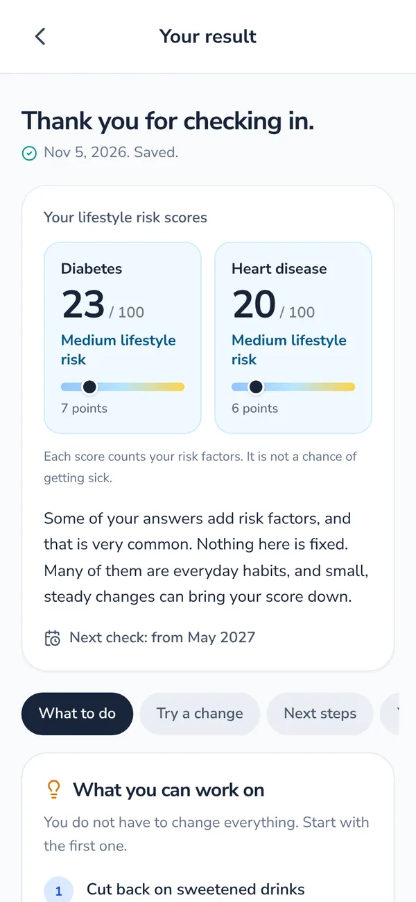
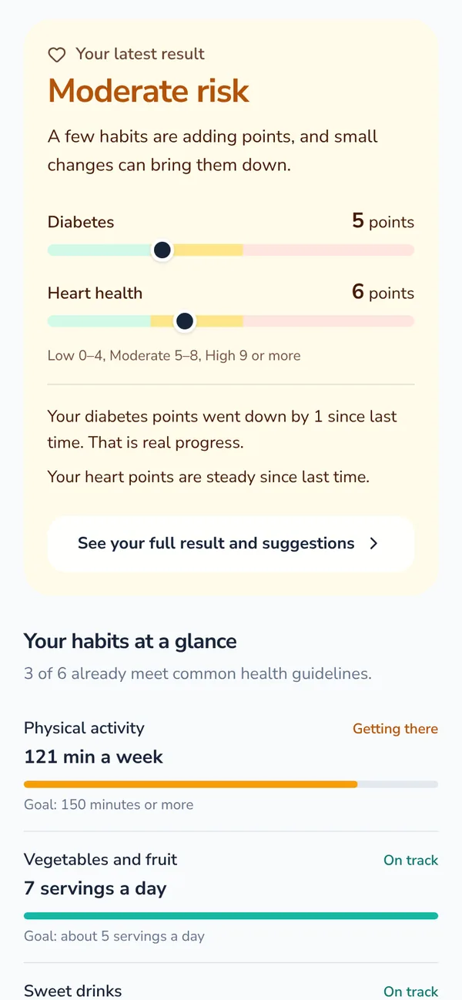
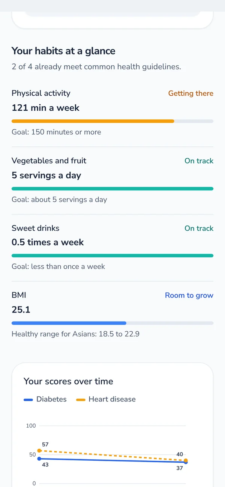
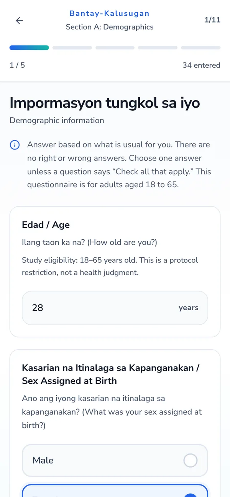
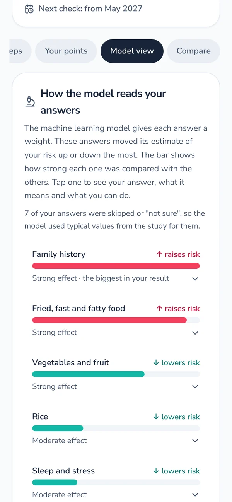
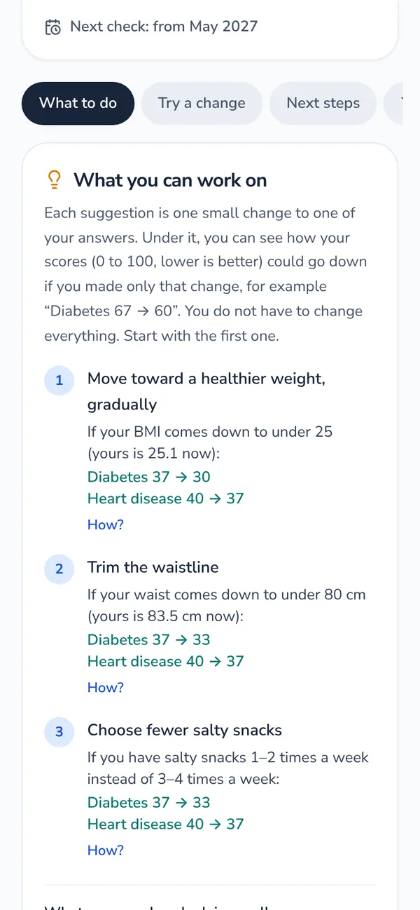

A short, guided questionnaire
Six sections on your health history, measurements, meals, activity, sleep and stress, in English and Tagalog.
Bantay-Kalusugan asks about your everyday habits and health history, shows your risk level for type 2 diabetes and heart disease, and explains in plain language what shaped it and what small steps could help.

From the first question to the last suggestion, the app is written to help you understand your result and feel able to act on it.
Six sections on your health history, measurements, meals, activity, sleep and stress, in English and Tagalog.
Low, Moderate or High, with separate diabetes and heart health points so you can see where you stand.
See which habits raised or lowered your result, each with a short explanation of why it matters.
Suggestions picked from your own answers, each showing how many points it could take off your score.
Activity, vegetables and fruit, sweet drinks, sleep and BMI compared with health guidelines, plus a daily tip.
The model was checked across sex, age, income and education groups. Nothing is saved until you give consent.
No jargon and no guessing what comes next. Four steps, and then a gentle reminder to check in again in 6 to 12 months.
Use your mobile number or email. We send a one-time code to confirm it is you.
Read what is collected and why. Your answers are only saved after you agree.
About 10 minutes on your habits, measurements and health history.
Your risk level, what shaped it, and small steps you can take, all on one screen.
These are real screens from the current version of the app, shown with sample answers.
Your latest risk level with diabetes and heart health meters, how your points changed since last time, and how your everyday habits compare with health guidelines.


Six short sections, one question at a time, with large answer buttons and every question in both Tagalog and English.

Swipe through what is behind your result, what you can work on, your next steps, and how the result was made. It is a screening aid, not a medical diagnosis.


A label on its own raises more questions than it answers. Bantay-Kalusugan shows which of your answers shaped your result, in either direction, so you know what is worth working on and what is already going well.
Behind the scenes, a machine learning model trained on the answers of 391 Filipino adults gives each answer a weight, and the app explains those weights in everyday language.
Before anything is saved, the app explains what is collected and why, and asks for your consent. Income and education answers are stored separately and are only used to check fairness. Read the full privacy policy.
Bantay-Kalusugan is for screening, learning and research. A result is not a diagnosis and does not replace a check-up. If your result is High, please visit a doctor or your barangay health center.
Free to download and use. Install it on your Android phone in a few taps, then follow the guide below if your phone asks for permission. The download will appear here as soon as the first release is ready.
Because the app is not from the Play Store, Android asks you to confirm a few things the first time. This is normal.
Tap Download APK on your Android phone. If Chrome says the file might be harmful, tap Download anyway.
Tap the notification when the download finishes, or open your Files or Downloads app and tap bantay-kalusugan.apk.
If you see "For your security, your phone is not allowed to install unknown apps," tap Settings, turn on Allow from this source, then go back.
If Google Play Protect asks about an unknown app, tap More details, then Install anyway.
Use your mobile number or email. Keep the app updated by downloading new versions from this page.
Ang Bantay-Kalusugan ay libreng Android app na nagtatanong tungkol sa iyong pang-araw-araw na gawi at kasaysayan ng kalusugan. Ipinapakita nito ang iyong antas ng panganib, kung ano ang nakaapekto rito, at maliliit na hakbang na puwede mong simulan. Screening lamang ito at hindi diagnosis.
Bantay-Kalusugan (also written Bantay Kalusugan) is a free Android app that screens your risk for type 2 diabetes and heart disease from a short questionnaire, explains what shaped your result, and suggests small steps. It was built as a University of the East thesis project.
No. It is a screening aid for learning and research. Only a health professional, usually with tests such as blood sugar and cholesterol, can tell you whether you have a condition.
Your answers add or remove points for diabetes and for heart health: 0 to 4 is low, 5 to 8 is moderate, and 9 or more is high. High means you have several risk factors worth looking at. It does not mean you are sick.
The project is about explainable machine learning. Instead of a label alone, the app shows which answers moved your result up or down, so you can see what is worth working on.
Every 6 to 12 months. Habits take time to change, so answering again sooner will not show a real difference.
Your name, mobile number or email, and your questionnaire answers, saved only after you give consent. You can delete your saved questionnaires in the app. See the privacy policy for details.
Yes. The questions are in Tagalog and English, the measurements use Asian cut-offs, and the model was trained on answers from 391 Filipino adults.
Not yet. The app is currently available for Android 7.0 or newer.
Bantay-Kalusugan was developed by BS Computer Science students at the University of the East, Manila, as part of the thesis "Explainable and Fair Machine Learning for Early Detection and Prediction of Chronic Diseases in the Filipino Population."
The app's tips and wording are based on public health guidance. It is an academic project, not an official product of any hospital or government agency.